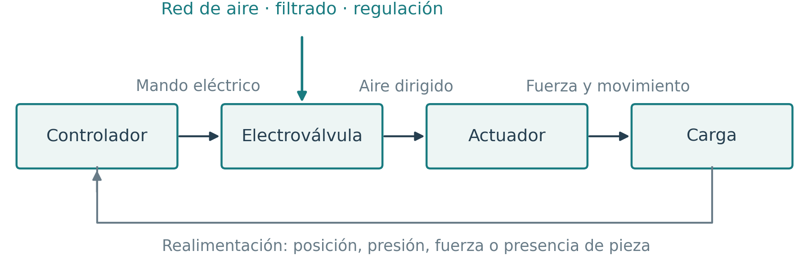
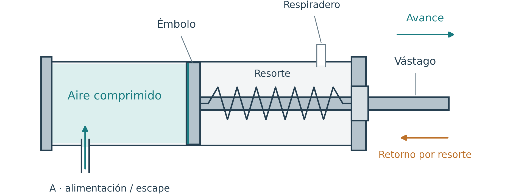
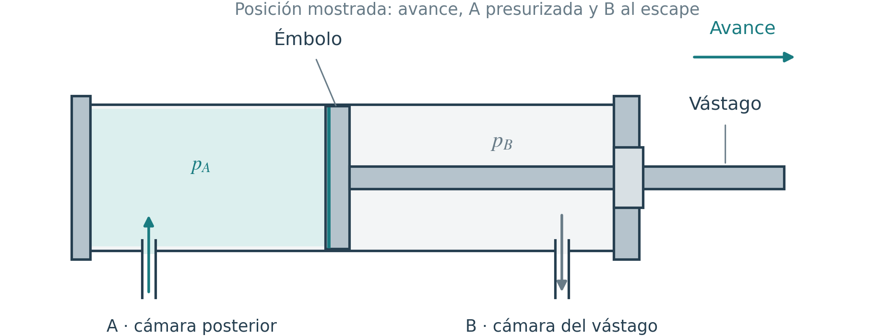
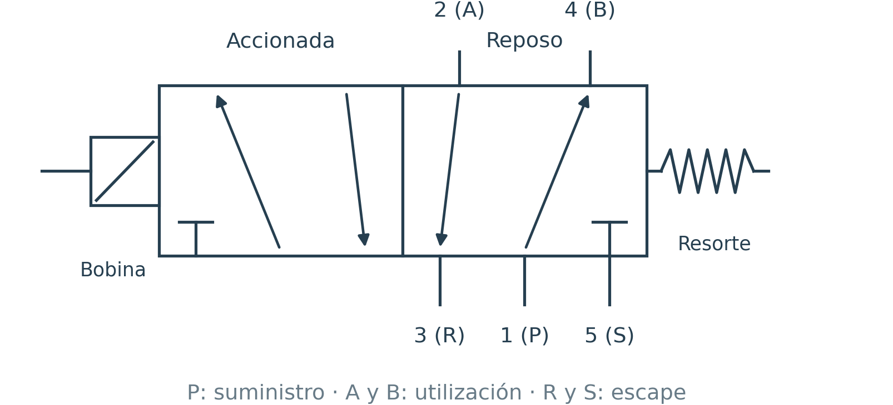
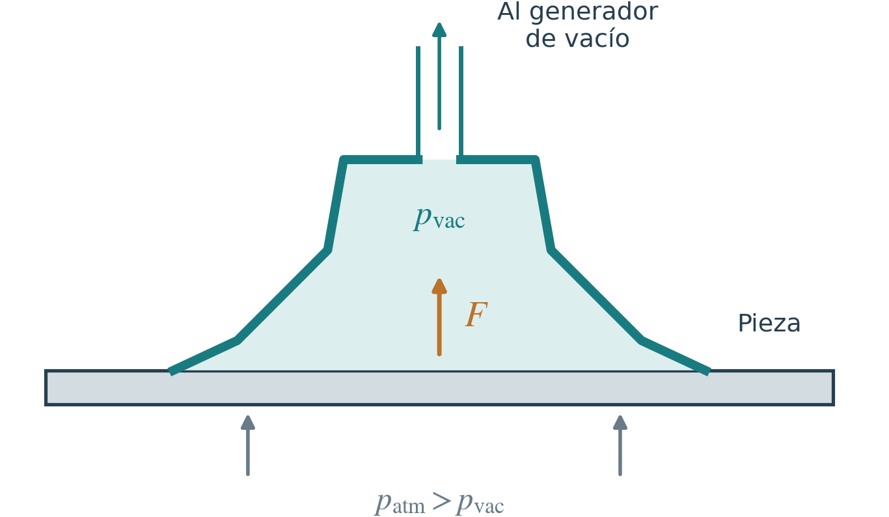
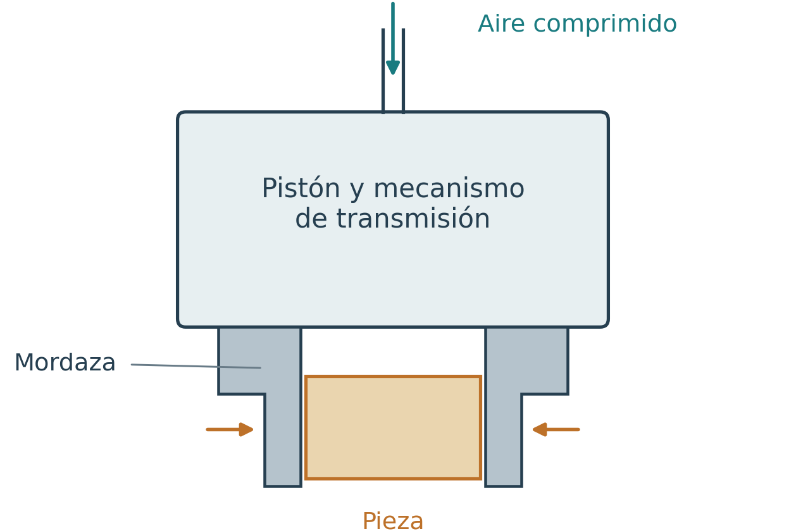
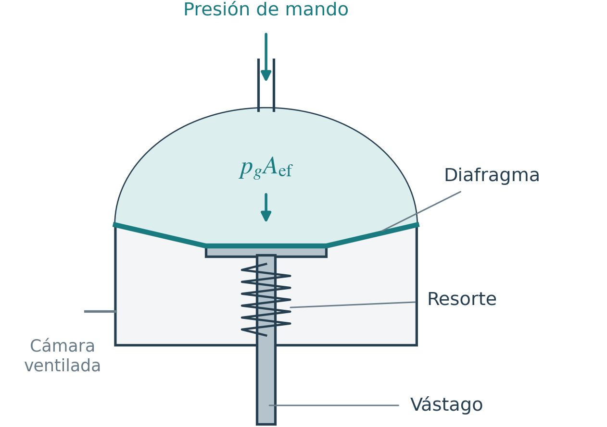
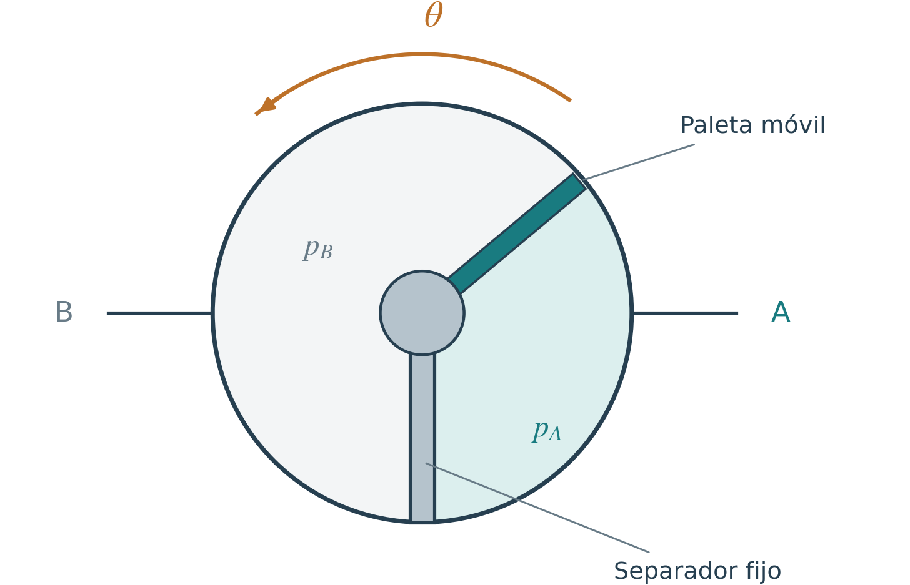

Instrumentación
Actuadores neumáticos: movimiento y sujeción con aire
Cilindros, ventosas y otros dispositivos que convierten una diferencia de presión en una acción sobre el proceso.
El aire comprimido permite desplazar, sujetar, orientar y manipular piezas mediante actuadores de construcción relativamente sencilla. Los cilindros producen movimiento lineal; las pinzas transforman ese movimiento en agarre; los actuadores giratorios orientan herramientas y los de diafragma posicionan válvulas de proceso. Las ventosas utilizan una presión inferior a la ambiental para sostener objetos sin rodearlos con mordazas. Revisaremos estos principios, las relaciones básicas de fuerza y consumo y los elementos de mando necesarios para integrarlos en un sistema mecatrónico. La presión, la posición y la presencia de una pieza deberán interpretarse como mediciones diferentes, porque ninguna de ellas describe por sí sola toda la acción del actuador.
Una señal eléctrica que termina moviendo una pieza
En una estación de ensamble, un controlador puede ordenar que una pieza avance, quede sujeta y sea presentada ante una cámara. La salida eléctrica del controlador contiene la orden, pero la energía para realizar el trabajo puede proceder de una red de aire comprimido. Una electroválvula dirige el aire hacia el actuador y este aplica la fuerza o el movimiento requeridos.
La neumática utiliza gases presurizados, habitualmente aire, para transmitir energía y producir acciones mecánicas. Se emplea en alimentadores, dispositivos de sujeción, máquinas de empaque, manipulación de piezas y regulación de válvulas. La rapidez de las maniobras y la posibilidad de distribuir aire a varios equipos favorecen su uso en automatización, aunque la compresibilidad y las pérdidas de aire deben considerarse desde el diseño.

Conviene distinguir el actuador, que realiza la acción mecánica, de las válvulas de mando, que encaminan o regulan el aire. El compresor, el depósito, los filtros y los reguladores forman parte del suministro. Para comprender un cilindro no hace falta estudiar todos los detalles del compresor, pero sí conocer la presión disponible en sus cámaras y la capacidad de alimentar y evacuar aire.
La diferencia de presión es la que produce fuerza
La presión es fuerza por unidad de superficie. Cuando dos lados de una superficie tienen presiones distintas, aparece una fuerza neta. En el caso más sencillo, con la misma área efectiva $A$ en ambos lados,
La presión debe expresarse en pascales y el área en metros cuadrados para obtener la fuerza en newtons. Un bar equivale exactamente a $10^5$ Pa. La presión atmosférica depende de la altitud y del tiempo; cerca del nivel del mar es aproximadamente 1.013 bar y no constituye la definición de un bar.
La presión absoluta se mide respecto al vacío y la presión manométrica respecto a la atmósfera local,
Si un manómetro indica 5 bar, normalmente informa una presión manométrica. Para calcular la fuerza contra una cámara abierta a la atmósfera se utiliza esa diferencia de presión. En cambio, para relacionar la cantidad de aire con su volumen y temperatura se emplean presiones absolutas. Mezclar ambas referencias altera los cálculos de consumo y de vacío.
El aire también se comprime. Una parte del flujo que entra puede elevar la presión antes de que la carga comience a moverse, y una fuerza externa puede desplazar un pistón comprimiendo el aire atrapado. Esta elasticidad explica por qué los topes mecánicos y los sensores de posición son importantes cuando se exige repetibilidad.
Cilindros de simple efecto
Un cilindro neumático contiene un émbolo que se desplaza dentro de una camisa. El sello del émbolo separa las cámaras, mientras el vástago transmite el movimiento a la carga. En un cilindro de simple efecto, el aire presurizado realiza el trabajo en un solo sentido. El retorno se obtiene mediante un resorte o una fuerza externa.

En el montaje mostrado, el aire entra por la cámara posterior, desplaza el émbolo y comprime el resorte. Para regresar, esa cámara debe poder descargar al escape. Cerrar solamente la alimentación puede dejar aire atrapado que se oponga al retorno. También existen configuraciones en las que el resorte mantiene el vástago extendido y el aire produce la retracción.
Si el resorte tiene precarga $F_0$, rigidez $k$ y compresión adicional $x$, una estimación de la fuerza útil durante el avance es
donde $F_f$ representa la fricción que se opone a ese movimiento. La fuerza disponible cambia a lo largo de la carrera aunque la presión sea constante. Estos cilindros son apropiados para expulsar, marcar o sujetar cuando basta con accionar neumáticamente un sentido y la fuerza de retorno es suficiente para la tarea.
El resorte define una tendencia de retorno, pero el movimiento real depende de que exista una ruta de descarga, de la carga y de la fricción. La posición que se obtiene al perder el mando se debe comprobar en el conjunto de cilindro, válvula y mecanismo.
Cilindros de doble efecto
En un cilindro de doble efecto, ambas cámaras tienen conexiones de aire. Para avanzar se presuriza la cámara posterior y se descarga la del vástago; para retroceder se invierten las conexiones. El aire puede producir trabajo en ambos sentidos, lo que permite mover, aproximar y retirar una herramienta con control activo de las dos carreras.

Si el diámetro del émbolo es $D$ y el del vástago es $d$, las superficies útiles son
$A_p$ es el área completa del pistón, $A_r$ el área del vástago y $A_a$ el área anular. Con el sentido positivo hacia el avance y presiones manométricas $p_A$ y $p_B$, la fuerza neumática es
La presión de la cámara que descarga no siempre es cero. Los conductos, los silenciadores y la regulación del escape pueden generar contrapresión. Durante un avance, el balance de fuerzas puede escribirse como
donde $m_{\mathrm{eq}}$ es la masa efectiva que se acelera y, en esta expresión, la fricción y la carga se consideran opuestas al avance. Por tanto, la fuerza que se calcula a partir de la presión no necesariamente coincide con la transmitida a una pieza.
Un ejemplo para comparar avance y retroceso
Consideremos $D=40$ mm, $d=16$ mm y una presión de alimentación de 5 bar manométricos. Si la cámara opuesta se aproxima a la presión atmosférica y se omite la fricción,
El retroceso dispone de menos fuerza porque el vástago ocupa parte de la superficie sobre la que actúa la presión. Estas son fuerzas teóricas; la selección final utiliza las condiciones reales de presión y los datos del fabricante. En un cilindro de doble vástago con áreas iguales en ambas cámaras, esta asimetría geométrica desaparece.
La lectura complementaria de Jaime Aniorte sobre cilindros de simple y doble efecto presenta cortes y simulaciones para observar el llenado y vaciado de las cámaras. Resulta útil comparar esas maniobras con las áreas y las fuerzas del modelo anterior.
Válvulas para decidir hacia dónde se mueve el aire
Una válvula distribuidora se identifica por el número de vías y de posiciones. Las vías son las conexiones funcionales y las posiciones son los estados de comunicación entre ellas. Cada posición se representa con un cuadro, dentro del cual las flechas indican las rutas disponibles y los remates transversales señalan pasos bloqueados.
Una 3/2 tiene tres vías y dos posiciones. En un mando típico de simple efecto conecta la alimentación con el cilindro al accionarse y conecta el cilindro con el escape al regresar. Una 5/2 tiene cinco vías y permite alimentar una cámara mientras descarga la otra. Las conexiones habituales se identifican como 1 para la alimentación, 2 y 4 para utilización, y 3 y 5 para los escapes.

En una válvula monoestable, un resorte establece el estado al retirar el mando. Una biestable conserva la última posición hasta recibir la orden contraria. Esta memoria pertenece a la válvula; no garantiza que un cilindro mantenga su posición frente a una carga o a una pérdida de presión.
Las distribuidoras de tres posiciones permiten otras conexiones centrales, como bloquear o descargar las cámaras. El comportamiento depende del centro elegido. En especial, encerrar aire no equivale a instalar un bloqueo mecánico rígido. La posición ante una parada se estudia junto con la carga, la descarga de energía y los dispositivos de retención.
Regular presión y regular velocidad son tareas distintas
Un regulador ajusta la presión disponible y, con ella, el nivel de fuerza que puede desarrollar el actuador. Para ajustar la velocidad se utilizan elementos de control de caudal; en muchos cilindros de doble efecto se estrangula el aire que sale, permitiendo entrada libre en el sentido contrario mediante una válvula de retención.
Esta regulación del escape introduce contrapresión y puede estabilizar el desplazamiento, pero la velocidad sigue dependiendo de la carga, la presión y la fricción. La relación $Q\approx Av$ sirve como aproximación cinemática cuando la presión en la cámara cambia poco y $Q$ representa el caudal volumétrico en las condiciones de esa cámara. No debe aplicarse directamente a un caudal referido a condiciones atmosféricas.
La carrera también consume aire
Para un cilindro de doble efecto con carrera $L$, los volúmenes barridos en un ciclo completo de avance y retroceso suman
Es un volumen geométrico, no todavía la cantidad equivalente de aire que debe suministrar el compresor. Si ambas cámaras se llenan hasta la misma presión absoluta, y se omiten los volúmenes muertos, las fugas y las diferencias de temperatura, una estimación referida a $p_{\mathrm{ref}}$ y $T_{\mathrm{ref}}$ es
Las temperaturas se expresan en kelvin. Para el cilindro del ejemplo, una carrera de 100 mm produce $V_{\mathrm{barrido}}\approx0.231$ litros por ciclo. Si tomamos $p_{\mathrm{atm}}=1$ bar absoluto, la alimentación de 5 bar manométricos corresponde a 6 bar absolutos. A igual temperatura y con referencia de 1 bar absoluto, el consumo estimado es 1.387 litros de aire libre por ciclo.
A 20 ciclos por minuto serían aproximadamente 27.7 L/min en esa referencia, antes de sumar tuberías, volúmenes adicionales y fugas. En las especificaciones comerciales se deben identificar las condiciones de referencia del caudal. Confundir litros dentro del cilindro con litros de aire libre puede subestimar considerablemente el suministro.
Ventosas y sistemas de vacío
Una ventosa permite tomar una pieza por una superficie accesible, sin envolverla con dedos. Se utiliza para manipular láminas, envases, paneles y componentes delicados. Su funcionamiento se basa en reducir la presión entre la ventosa y la pieza, de manera que la presión exterior produzca la fuerza de sujeción.

El vacío puede producirse mediante una bomba o mediante un eyector neumático. En este último, un chorro de aire comprimido pasa por una boquilla y arrastra aire desde una conexión de aspiración. El eyector necesita tanto una alimentación adecuada como una descarga que no genere contrapresión excesiva.
La fuerza ideal de sujeción normal a la superficie es
$A_{\mathrm{ef}}$ es el área efectiva de succión, que no siempre coincide con la calculada a partir del diámetro exterior. Como la presión absoluta no puede disminuir por debajo de cero, la diferencia disponible tiene como límite la presión atmosférica local. La altitud influye por ello en la capacidad de sujeción.
Un cálculo preliminar de agarre
Supongamos un diámetro efectivo de 40 mm, presión ambiental de 100 kPa absolutos y presión bajo la ventosa de 40 kPa absolutos. La diferencia es 60 kPa y resulta
Para elevar una pieza de masa $m$ con aceleración ascendente $a_z$, un criterio preliminar para $n$ ventosas que comparten la carga de manera uniforme es
donde $S$ es un factor de diseño que introduce margen. Para $m=1.5$ kg, $a_z=3\,\mathrm{m/s^2}$ y $S=2$, la exigencia es aproximadamente 38.4 N. La fuerza ideal del ejemplo supera ese valor, pero la selección requiere comprobar el área efectiva y la fuerza admisible del fabricante en la superficie real.
La rugosidad, la porosidad, los orificios y las deformaciones pueden introducir fugas o impedir un sellado adecuado. Las ventosas de fuelle se adaptan a diferencias de altura, mientras las planas pueden ofrecer una referencia de apoyo más definida. También importa la capacidad de evacuación del generador y el tiempo necesario para alcanzar el vacío de trabajo.
Si la superficie de agarre es vertical y el peso actúa tangencialmente, la fricción y los momentos de vuelco adquieren importancia; no basta con comparar el peso con $\Delta p A$. Un vacuostato permite confirmar un umbral de vacío y detectar pérdidas, aunque esa señal debe interpretarse según el material y el estado del sello.
Pinzas neumáticas
Las pinzas utilizan un pistón y un mecanismo interno para mover mordazas paralelas, angulares o autocentrantes. Pueden sujetar una pieza desde el exterior o expandirse dentro de una abertura. Son útiles cuando una superficie no permite sellar una ventosa o cuando se necesita una referencia geométrica entre la pieza y los dedos.

La fuerza de agarre depende de la presión, de la transmisión interna y de la distancia desde la guía hasta el punto de contacto. Por eso se consulta la fuerza especificada para la longitud de dedo y la apertura elegidas, además de las cargas y momentos admisibles.
En un agarre vertical por fricción con dos contactos iguales, cada dedo aplicando una fuerza normal $F_d$, una estimación es
con $\mu$ como coeficiente de fricción efectivo. La fuerza normal debe ser suficiente para sostener la pieza sin dañarla. Los sensores de apertura o cierre informan de la posición de las mordazas; para confirmar un agarre correcto puede necesitarse también detectar la pieza o verificar una posición de cierre característica.
Diafragmas y válvulas de proceso
Un actuador de diafragma utiliza una membrana flexible para convertir una diferencia de presión en fuerza sobre un vástago. Se emplea para desplazar el obturador de una válvula de proceso, regulando el paso de agua, vapor u otro fluido. El aire de mando y el fluido que atraviesa la válvula pertenecen a circuitos diferentes.

En un equilibrio simplificado,
Si la precarga, el área y la carga se mantienen constantes, y la fricción es pequeña, el desplazamiento puede variar aproximadamente de forma lineal con la presión. En una válvula real, la fuerza del fluido, la fricción de la empaquetadura y la variación del área efectiva alteran esa relación.
Un convertidor de corriente a presión, llamado I/P, puede transformar una señal de 4–20 mA en una señal neumática, por ejemplo de aproximadamente 20–100 kPa manométricos. Un posicionador mide la posición del vástago y ajusta el aire para que siga la consigna, compensando parte de las perturbaciones mecánicas.
La posición del vástago no equivale directamente al caudal de proceso. Este también depende del perfil del obturador, de la diferencia de presión y de las propiedades del fluido. Las características inherentes lineal o de igual porcentaje describen relaciones bajo condiciones definidas; la respuesta instalada depende asimismo de la tubería.
Actuadores giratorios y motores neumáticos
Un actuador semigiratorio produce un giro limitado para orientar una pieza, accionar una compuerta o cambiar la posición de una válvula. Puede utilizar un pistón con piñón y cremallera o una paleta solidaria al eje dentro de una cámara dividida.

En un accionamiento de cremallera, la fuerza tangencial $F_t$ sobre un piñón de radio primitivo $r_p$ produce aproximadamente $\tau=F_t r_p$. En uno de paleta, el par depende de la diferencia de presión y de la geometría efectiva de la cámara. En ambos casos se revisan también la inercia de la carga y la energía que debe absorberse al llegar a los topes.
Para rotación continua se utiliza un motor neumático. En el de paletas, un rotor excéntrico y varias paletas forman cámaras de volumen variable. La expansión del aire produce par y el escape permite continuar el ciclo. Se utiliza en herramientas, mezcladores y accionamientos donde interesa una unidad compacta. Su velocidad depende del suministro y de la carga; para regularla con precisión se necesita medirla y actuar sobre el mando correspondiente.
Otras formas de actuación con aire
Los cilindros sin vástago desplazan un carro mediante un acoplamiento mecánico o magnético con el pistón interno. Permiten recorridos largos sin un vástago que se extienda más allá de la camisa. Las guías absorben los esfuerzos laterales y los momentos; en un acoplamiento magnético debe respetarse también su capacidad de transmisión.
Los cilindros tándem combinan superficies de pistón para aumentar el empuje dentro de una envolvente estrecha. Los guiados, compactos y de varias posiciones resuelven necesidades de montaje, rigidez o recorridos específicos. Su elección parte de la tarea y de las capacidades indicadas para cada construcción.
Los fuelles neumáticos cambian su altura al presurizarse y sirven para elevaciones cortas, prensado o aislamiento de vibraciones. La fuerza depende del área efectiva y de la deformación del fuelle, por lo que no se supone constante durante toda la carrera. El retorno puede requerir una carga externa.
Un músculo neumático contiene una membrana tubular reforzada que se ensancha y se acorta al recibir presión. Produce tracción, con una relación entre fuerza, presión y contracción que es no lineal. Resulta útil cuando interesa un accionamiento ligero y flexible, aunque requiere un modelo o una caracterización apropiados para regular fuerza o posición.
Qué debe medir un sistema mecatrónico
Una orden enviada a una electroválvula no confirma que el actuador haya completado el movimiento. Un sensor magnético de cilindro puede detectar el imán del pistón cerca de un extremo; un transductor continuo permite conocer posiciones intermedias. El presostato informa de un umbral de presión y el vacuostato de una condición de vacío.
La presión elevada puede indicar contacto con una pieza, llegada a un tope o un atasco. Para medir una fuerza de proceso con buena trazabilidad puede ser necesaria una celda de carga, porque los sellos, el resorte y la contrapresión intervienen entre $pA$ y la fuerza útil. Del mismo modo, detectar el cierre completo de una pinza puede significar que no encontró ninguna pieza.
En una estación que toma una pieza por vacío, la secuencia puede organizarse con estados y condiciones de transición. La tabla muestra un ejemplo funcional; los sensores y umbrales se ajustan a la máquina y al material manejado.
Cada movimiento necesita un tiempo máximo de ejecución. Si la confirmación no llega, la secuencia debe identificar la condición y evitar continuar como si la acción hubiera terminado. La reacción ante una pérdida de presión se define según la carga y la tarea; descargar aire, mantener vacío o aplicar un bloqueo son acciones con consecuencias físicas distintas.
Elegir el conjunto desde la aplicación
La selección comienza por el tipo de acción, la fuerza o el par, el recorrido y el tiempo de ciclo. Después se revisan la presión disponible bajo consumo, el caudal, las pérdidas en tuberías y escapes, el montaje y las cargas laterales. El aire debe tener la calidad y la lubricación que requieran los componentes; añadir lubricación indiscriminadamente tampoco es una solución universal.
Las fugas, la generación continua de vacío y el uso de una presión mayor que la necesaria aumentan el consumo. Los conductos próximos al actuador, el dimensionamiento del mando y la supervisión de presión y vacío ayudan a mantener el desempeño. Reducir el diámetro del cilindro sin revisar la carga o cerrar un regulador de caudal sin revisar la contrapresión puede cambiar el funcionamiento de toda la estación.
La neumática resulta especialmente útil cuando la acción requerida se comprende junto con su forma de medición. Conocer qué cámara recibe aire, qué superficie produce fuerza y qué sensor confirma el resultado permite pasar de una orden de control a una operación verificable.
Referencias
- Aniorte, J. (2026, 10 de octubre). Cilindro de simple efecto y doble efecto: las diferencias. Soy Tecno Teacher.
- Bolton, W. (2017). Mecatrónica: Sistemas de control electrónico en la ingeniería mecánica y eléctrica. Un enfoque multidisciplinario (6.ª ed., cap. 7, «Sistemas de actuación neumática e hidráulica», pp. 165–187). Alfaomega.
- Festo. (s. f.-a). Diaphragm actuators / pneumatic spring actuators.
- Festo. (s. f.-b). Gripper systems.
- Festo. (s. f.-c). Pneumatic cylinders.
- Festo. (s. f.-d). Rodless cylinders.
- J. Schmalz GmbH. (s. f.-a). Design of the suction cup.
- J. Schmalz GmbH. (s. f.-b). Holding force.